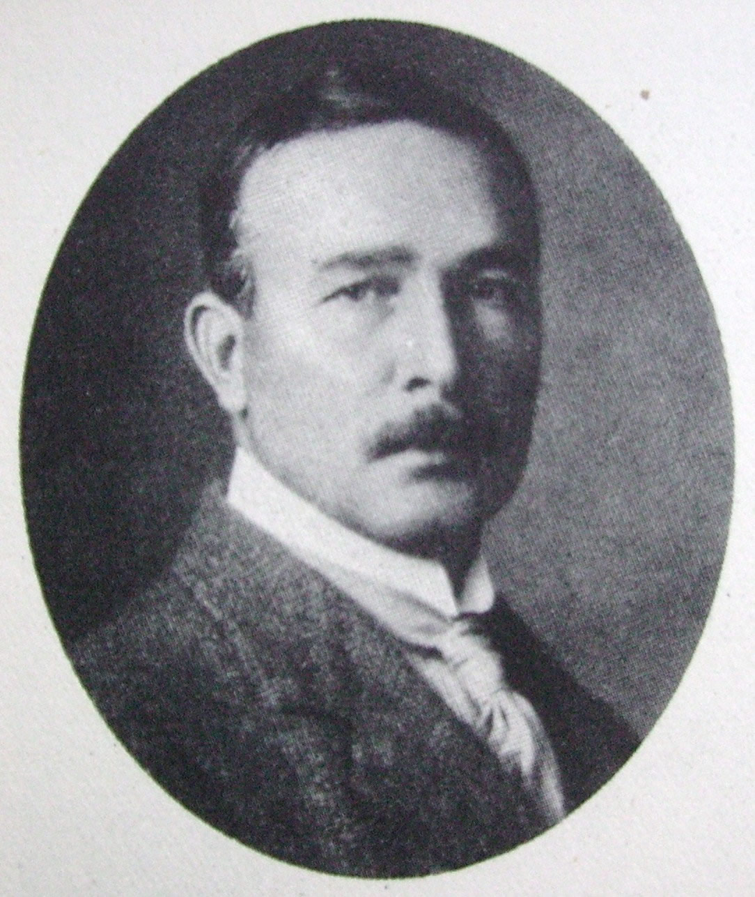

Erik Axel Karlfeldt

Erik Axel Karlfeldt, ursprungligen Eriksson, född 20 juli 1864 i Karlbo i Kopparbergs län, död 8 april 1931 i Stockholm, var en svensk poet och författare.
Han var ledamot av Svenska Akademien 1904–1931 och postum mottagare av Nobelpriset i litteratur 1931.
Under sommaren 1895 färdigställde Karlfeldt sin debutbok, Vildmarks- och kärleksvisor, som publicerades strax före jul samma år av Seligmanns förlag. Försäljningsmässigt blev boken ett fiasko med endast ett par hundra sålda exemplar. I boken använder Karlfeldt inga komplicerade versmått men däremot ofta omvänd ordföljd för att få rimmen att stämma. Den omvända ordföljden skulle Karlfeldt senare undvika. Han använde genomgående folkvise- eller balladstrofer. Detta innebar att dikterna är indelade i strofer med samma antal rader och med samma meter. Däremot kan strofernas längd, rytmens karaktär och rimmens antal varieras.
I början av 1913 blev Karlfeldt Svenska Akademiens ständige sekreterare när han efterträdde Carl David af Wirsén. Under hösten 1927 publicerades diktsamlingen Hösthorn som lovordades av kritikerna. Den första upplagan på 5 000 exemplar sålde slut på en vecka. På natten den 8 april 1931 klockan 00.58 drabbades han av kärlkramp och avled i sitt hem. Efter Karlfeldts död sålde hans hustru förlagsrätten till bokförlaget Wahlström & Widstrand för 75 000 kronor. I oktober tilldelades Karlfeldt postumt nobelpriset i litteratur, vars prissumma uppgick till 173 206 kronor. Han är begravd i Folkärna.
Källa:
Wikipedia